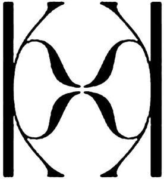

Trade Mark Journal No.2025/018 2 May 2025
WO0000001840471 (9,14,18,25,35)
Office of origin: Australia
Date of International Registration:8 November 2024
Date of designation in the UK:
8 November 2024

International priority date claimed: 10 May 2024
(Australia)
(2449535)
- Class 9
- Sunglasses; frames for sunglasses; lenses for sunglasses; cases adapted for sunglasses; spectacles (glasses); ophthalmic glasses; glasses for optical use; glasses cases; glasses frames; lenses for glasses; protective clothing, footwear and headgear; wetsuits, wetsuit vests and wetsuit booties; parts, fittings and accessories in this class for the aforesaid goods.
- Class 14
- Jewellery; jewellery in precious metals; jewellery in non-precious metals; imitation jewellery; boxes for jewellery; jewellery cases; watches; chronological instruments; key rings, key holders, chains for key rings and charms for key rings; parts, fittings and accessories in this class for the aforesaid goods.
- Class 18
- Bags, including hand bags, shoulder bags and overnight bags; luggage; clutches, clutch bags and clutch handbags; wallets; purses; backpacks and rucksacks; clothing made of imitation leather; articles made from leather; badges made of leather; bags (envelopes, pouches) of leather, for packaging; bags made of imitation leather; bags made of leather; boxes made of leather; boxes made of leather boards; boxes of leather or leather board; briefcases made of leather; cases, of leather or leatherboard; casings, of leather, for plate springs; casings, of leather, for springs; chamois leather, other than for cleaning purposes; chin straps, of leather; envelopes, of leather, for packaging; figurines made from leather; furniture coverings of leather; girths of leather; goods made of leather or imitation leather, not included in other classes; handbags made of imitation leather; handbags made of leather; harness made from imitation leather; harness made from leather; hat boxes of leather; imitation leather; leads made of leather; leather; leather bags; leather belts (shoulder); leather bound covers for albums; leather boxes; leather briefcases; leather cases; leather cloth; leather envelopes for packaging; leather fibre material; leather fittings for furniture; leather laces; leather leads; leather leashes; leather notecases (covers); leather portfolios (covers); leather purses; leather shoulder belts; leather shoulder straps; leather straps; leather thongs; leather travelling suitcases; leather trimmings for furniture; leather cord; leather wallets; leather, unworked or semi-worked; leatherboard; luggage labels (tags) of leather or imitation leather; moleskin (imitation of leather); pouches, of leather, for packaging; sheets of imitation leather for use in manufacture; sheets of leather for use in manufacture; stirrup leathers; straps of leather (saddlery); sew-on tags of leather for clothing; synthetic leather; tool bags of leather (empty); travelling sets (leatherware); trimmings of leather for furniture; valves of leather.
- Class 25
- Apparel (clothing, footwear, headgear); aprons (clothing); arm warmers (clothing); articles of clothing for theatrical use; articles of clothing made from wool; articles of clothing made of fur; articles of clothing made of hides; articles of clothing made of imitation leather; articles of clothing made of leather; articles of clothing made of plush; articles of water-resistant clothing; articles of waterproof clothing; articles of weatherproof clothing; articles of windproof clothing; athletic clothing; babies' pants (clothing); ballet clothing; beach clothing; belts (clothing); boys' clothing; braces for clothing (suspenders); cashmere clothing; casual clothing; children's clothing; clothing; clothing for babies; clothing for sports; clothing for surfing; clothing for swimming; clothing of fur; clothing of imitations of leather; clothing of leather; clothing of paper; clothing, not being protective clothing, incorporating reflective or fluorescent elements or material; collars (clothing); combinations (clothing); cowls (clothing); cyclists' clothing; dance clothing; denims (clothing); drawers (clothing); furs (clothing); gabardines (clothing); girl's clothing; gloves (clothing); golf clothing (other than gloves); halters (clothing); headbands (clothing); hoods (clothing); infants' clothing; ready-made linings [parts of clothing]; jackets (clothing); jerseys (clothing); jump suits (clothing); kerchiefs (clothing); knitted clothing; knitwear (clothing); ladies' clothing; layettes (clothing); leather belts (clothing); linen articles of clothing; mantles (clothing); maternity clothing; men's clothing; mitts (clothing); money belts (clothing); motorcyclists' clothing (other than for protection against accident or injury); motorists' clothing; muffs (clothing); oilskins (clothing); pants (clothing); paper clothing; paper hats (clothing); playsuits (clothing); plush clothing; pockets for clothing; rainproof clothing; ready made linings for clothing; ready-made clothing; ready-made linings (parts of clothing); ready-made pockets (parts of clothing); ready-to-wear clothing; silk clothing; ski clothing (other than for protection against injury); slips (clothing); sports clothing (other than golf gloves); stockinet clothing; stuff jackets (clothing); tennis clothing; thongs (clothing); three piece suits (clothing); veils (clothing); water-resistant clothing; waterproof clothing; weather resistant outer clothing; weatherproof clothing (not specifically adapted for protection against accident or injury); women's clothing; woollen clothing; woven articles of clothing; wraps (clothing); swimwear, bikinis and swimming costumes; underwear and lingerie; accessories in this class, including, ties, gloves and scarves.
- Class 35
- Retail, online retail and wholesale services connected with the sale of clothing, swimwear, sleepwear, underwear, lingerie, footwear, headgear, sporting goods, sunglasses, jewellery, wristbands, precious stones, watches, cosmetics, skincare creams and lotions, stationery, magazines (including electronic magazines provided online), journals (including electronic magazines provided online), books (including electronic books provided online), calendars, diaries, greeting cards, posters, bags, handbags, luggage, backpacks, rucksacks, sports bags, purses, wallets; marketing and advertising services; consultation, advisory and information services in relation to the aforementioned services.
Wild & Free Pty Ltd
Representative: Kilburn & Strode LLP, Lacon London, 84 Theobalds Road London WC1X 8NL UNITED KINGDOM